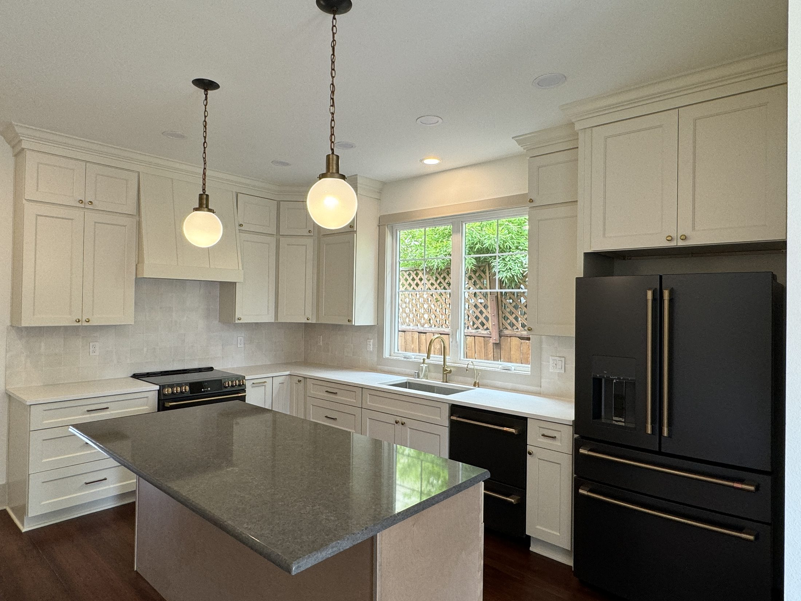

New Construction
Site work, architectural plans, permitting, and subcontractor management — handled. We keep your build on budget and on schedule.
Learn more
We build new homes with character and restore old ones back to life — with precision, passion, and purpose.

Grit City Builders is a family-run home builder and general contracting company based in the Pacific Northwest. Founded by Matt and Alexis Bender, we take on new builds, full-scale renovations, and restorations — the bigger the challenge, the more excited we get.
We earn our reputation the hard way: careful planning, honest communication, and finishing on time without cutting corners. Every home we touch is built to withstand the test of time.
More About UsWhatever the scope, we guide you through every step — or take care of it directly — so you can focus on watching your vision come to life.
Site work, architectural plans, permitting, and subcontractor management — handled. We keep your build on budget and on schedule.
Learn more
We love the new beginnings a full renovation brings. No shortcuts, no surprises — just craftsmanship that lasts.
Learn more
Add living space and build equity. With the Home in Tacoma initiative, an accessory dwelling unit can be a smart move — and we've built them.
Learn more
We turned a downtrodden 1904 home into a gorgeous Craftorian-inspired residence — relocating the staircase, adding two baths and a detached garage, and even building a bocce court for our clients.
See the Before & AfterWe meet, walk the space, and learn everything about your project, timeline, and budget.
Alexis brings the vision to life with design choices while we handle plans, permits, and pricing.
Our team of specialized subcontractors executes with precision — and clear, ongoing communication.
We finish on time and walk you through a home that's built to last for generations.
Whether it's a renovation, a new build, or a restoration you can't stop thinking about — we'd love to learn more.
Get in Touch